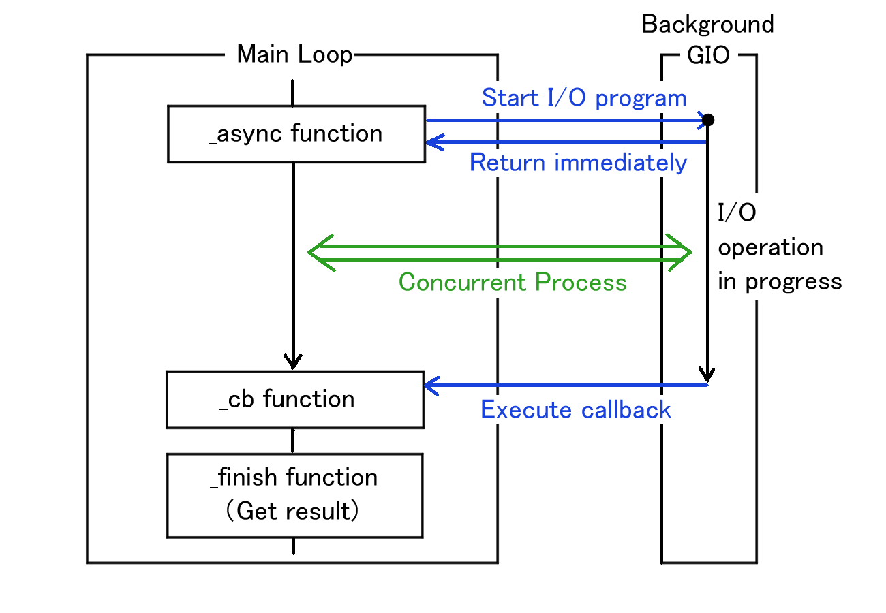

File Dialogs and the GIO Asynchronous Model
What is Asynchronous Operation?
GUI applications, like those built with GTK, run in a continuous loop called the main loop. This loop constantly waits for user events—such as mouse clicks or key presses—and redraws the screen as needed.
Because the main loop must keep running quickly to keep the application responsive, you should never perform heavy or time-consuming tasks (like reading a large file or downloading data from the network) directly inside it. If you use a synchronous function for a slow I/O operation, the main loop will block and wait for the operation to finish. During this time, your application will freeze, and the user will not be able to click or type anything.
To solve this problem, we use asynchronous operations. When you call an asynchronous function, it immediately requests the slow operation to start in the background and instantly returns control to the main loop. The application remains responsive. Once the background operation is complete, the application is notified so it can handle the result.
The GIO Asynchronous Model
GIO is the underlying I/O library used by GTK. It provides a consistent, powerful model for handling asynchronous operations using a Callback mechanism.

The GIO asynchronous model always follows a strict pattern
using a pair of functions: _async and
_finish.
- Start the operation (
_async): You call a function ending in_async(e.g.,do_something_async). You pass your parameters, along with a pointer to a callback function that you have written. - Wait in the background: The
_asyncfunction returns immediately. The main loop continues running smoothly while GIO does the hard work in the background. - Execute the callback: When the operation completes (either successfully or with an error), GIO automatically calls your callback function.
- Get the result (
_finish): Inside your callback function, you must call the corresponding_finishfunction (e.g.,do_something_finish). This function collects the actual result (like aGFile) or anyGErrorthat occurred during the process.
Getting a File Name with GtkFileDialog
In GTK4, GtkFileDialog is the modern way to ask
the user to choose a file. It uses the native file chooser
dialog of the user’s operating system or desktop environment and
is designed entirely around the GIO asynchronous model.
There are two main operations when dealing with files:
- Opening a file: Uses
gtk_file_dialog_open_asyncandgtk_file_dialog_open_finish. - Saving a file: Uses
gtk_file_dialog_save_asyncandgtk_file_dialog_save_finish.
Here is a practical code example of how to show an “Open”
file dialog and handle the user’s selection using the
_async and _finish pattern.
The Callback Function
First, we define the callback function that will run when the user selects a file or cancels the dialog.
static void
open_dialog_cb (GObject *source_object, GAsyncResult *res, gpointer data) {
/* The source_object is the GtkFileDialog that started the operation */
GtkFileDialog *dialog = GTK_FILE_DIALOG (source_object);
GError *err = NULL;
GFile *file;
/* Call the _finish function to get the result of the async operation */
/* If an error occurs during the interaction process, the function returns NULL. */
file = gtk_file_dialog_open_finish (dialog, res, &err);
if (file != NULL) {
/* The user selected a file successfully */
g_print ("File selected: %s\n", g_file_get_path (file));
/* We own the GFile, so we must unreference it when done */
g_object_unref (file);
} else {
/* The user cancelled the dialog or an error occurred */
g_print ("Dialog cancelled or error: %s\n", err->message);
g_error_free (err);
}
}Setting up and showing the dialog
Next, we write the function that creates the dialog and starts the asynchronous operation.
static void
show_open_dialog (GtkWindow *parent_window) {
/* Create a new GtkFileDialog instance */
GtkFileDialog *dialog = gtk_file_dialog_new ();
/* Start the asynchronous open operation.
* We pass 'open_dialog_cb' as the callback function. */
gtk_file_dialog_open_async (dialog,
parent_window,
NULL, /* GCancellable (NULL means we won't cancel it programmatically) */
open_dialog_cb, /* The callback function to run when done */
NULL); /* User data to pass to the callback (NULL here) */
}If you wanted to implement a “Save As” feature instead, the
structure would be exactly the same. You would simply change
gtk_file_dialog_open_async to
gtk_file_dialog_save_async, and inside the
callback, you would use
gtk_file_dialog_save_finish.
With this pattern, your application remains fully responsive while the user browses their folders, and you safely receive the selected GFile once they are ready.
Keep in mind that GIO uses this exact same asynchronous
pattern for almost all input and output operations, such as
reading and writing files. Therefore, mastering this
_async and _finish pattern is an
absolutely essential skill for whenever you write any
I/O-related code in the future.
Clicked Signal Handler on Open Button
Now, we will look at the TFE (Text File Editor) main program
tfeapplication.c. First, we will focus on the
“clicked” signal handler on “Open” button. The handler shows the
file dialog then reads the file to the newly created TfeTextView
instance.
static void
open_cb (GtkNotebook *nb) {
GtkFileDialog *dialog;
GtkWidget *win = gtk_widget_get_ancestor (GTK_WIDGET (nb), GTK_TYPE_WINDOW);
dialog = gtk_file_dialog_new ();
gtk_file_dialog_open (dialog, GTK_WINDOW (win), NULL, open_dialog_cb, nb);
g_object_unref (dialog);
}The open_cb function is called when the “Open”
button is clicked. It creates a file dialog and calls
gtk_file_dialog_open, passing
open_dialog_cb as the callback function. This
starts a background operation that displays the dialog and waits
for user input, while the function itself returns immediately to
the caller. Once the user interaction is complete, the
background operation invokes the callback.
static void
open_dialog_cb (GObject *source_object, GAsyncResult *res, gpointer data) {
GtkFileDialog *dialog = GTK_FILE_DIALOG (source_object);
GtkNotebook *nb = GTK_NOTEBOOK (data);
GtkWidget *win;
GFile *file;
GError *err = NULL;
if ((file = gtk_file_dialog_open_finish (dialog, res, &err)) == NULL) {
if (!g_error_matches (err, GTK_DIALOG_ERROR, GTK_DIALOG_ERROR_DISMISSED)) {
win = gtk_widget_get_ancestor (GTK_WIDGET (nb), GTK_TYPE_WINDOW);
tfe_error_alert (GTK_WINDOW (win), err);
}
g_clear_error (&err);
return;
}
notebook_page_new_with_file (nb, file);
g_object_unref (file);
}- 9-15: Calls
gtk_file_dialog_open_finishto retrieve the selected GFile. A NULL return value indicates that the operation failed or the dialog was dismissed by the user. If the error was not caused by cancellation, it displays an alert usingtfe_error_alert. The function then clears the error and returns. - 17: Calls
notebook_page_new_with_fileto create a new TfeTextView instance and build a new notebook page with it. - 18: Frees
file
The function tfe_error_alert is as follows. This
is a private helper function.
static void
tfe_error_alert (GtkWindow *win, GError *err) {
GtkAlertDialog *alert_dialog;
GtkWindow *parent;
if (win != NULL && gtk_widget_get_mapped (GTK_WIDGET (win)))
parent = win;
else
parent = NULL;
alert_dialog = gtk_alert_dialog_new ("%s", err->message);
gtk_alert_dialog_show (alert_dialog, parent);
g_object_unref (alert_dialog);
}- 6-9: The argument
wincan be NULL. Otherwise it must be the main window instance and also mapped (drawn on the screen). If it is not mapped, an error possibly occurs even if the window instance actually exists. - 10: Creates an alert dialog.
- 11: Shows the dialog. The second argument specifies the
“transient parent window.” While passing NULL is generally
discouraged, it is mandatory here. Since
tfe_error_alertcan be called from the “open” handler before the main window is mapped, passing NULL is the only safe way to display the dialog. See GTK documentation for further information about transient parent. - 12: releases the alert dialog.
Page build Utility
A private function notebook_page_new_with_file
creates a new TfeTextView instance and builds a new page in the
GtkNotebook.
static void
notebook_page_new_with_file (GtkNotebook *nb, GFile *file) {
g_return_if_fail (GTK_IS_NOTEBOOK (nb));
g_return_if_fail (G_IS_FILE (file) || file == NULL);
GtkWidget *win;
GtkNotebookPage *nbp;
GtkWidget *scr;
GtkWidget *tv;
GtkWidget *lab;
int i;
GError *err = NULL;
if ((tv = tfe_text_view_new_with_file (file, &err)) == NULL) {
win = gtk_widget_get_ancestor (GTK_WIDGET (nb), GTK_TYPE_WINDOW);
tfe_error_alert (GTK_WINDOW (win), err);
g_clear_error (&err);
return;
}
lab = tfe_label_from_file (file); /* lab is floating. lab can be NULL */
scr = gtk_scrolled_window_new ();
gtk_scrolled_window_set_child (GTK_SCROLLED_WINDOW (scr), GTK_WIDGET (tv));
i = gtk_notebook_append_page (nb, scr, lab);
nbp = gtk_notebook_get_page (nb, scr);
g_object_set (nbp, "tab-expand", TRUE, NULL);
gtk_notebook_set_current_page (nb, i);
}- 14-19: Calls
tfe_text_view_new_with_fileto create a new TfeTextView with the GFilefile. The argumentfilecan be NULL and the function returns an empty TfeTextView instance. If an error occurs, it callstfe_error_alertto show the error message and returns. - 20: Calls
tfe_label_from_file. This function creates a GtkLabel instance with the filename obtained from the GFile. If the argument (GFile) is NULL, the function returns NULL. -21-22: Creates a scrolled window instance and sets the child totv. - 23: Appends the scroll window and label to the notebook as the child and tab respectively.
- 24-25: Sets the “tab-expand” property of the notebook page
to TRUE using
g_object_set - 26: Sets the current page to the new page.
Clicked Signal Handler on Save Button
Next, we will go on to the “clicked” signal handler on the “Save” button.
static void
save_cb (GtkNotebook *nb) {
int i;
GtkWidget *win;
GtkWidget *scr;
GtkWidget *tv;
GError *err = NULL;
GtkFileDialog *dialog;
GtkAlertDialog *alert_dialog;
i = gtk_notebook_get_current_page (nb);
win = gtk_widget_get_ancestor (GTK_WIDGET (nb), GTK_TYPE_WINDOW);
if (i == -1) {
alert_dialog = gtk_alert_dialog_new ("No page to save.");
gtk_alert_dialog_show (alert_dialog, GTK_WINDOW (win));
g_object_unref (alert_dialog);
return;
}
scr = gtk_notebook_get_nth_page (nb, i);
tv = gtk_scrolled_window_get_child (GTK_SCROLLED_WINDOW (scr));
if (tfe_text_view_get_file (TFE_TEXT_VIEW (tv))) { /* File is already set */
if (!tfe_text_view_write (TFE_TEXT_VIEW (tv), &err)) {
tfe_error_alert (GTK_WINDOW (win), err);
g_clear_error (&err);
}
} else {
dialog = gtk_file_dialog_new ();
gtk_file_dialog_save (dialog, GTK_WINDOW (win), NULL, save_dialog_cb, tv);
g_object_unref (dialog);
}
}- 11-19: If the GtkNotebook has no page, it shows the alert dialog with “No page to save.” and returns.
- 24-28: If the TfeTextView holds a GFile, it just writes the content of the buffer to the file.
- 30-32: If the TfeTextView does not hold a GFile, it shows a
Filedialog. The callback function is
save_dialog_cb.
The save_dialog_cb function is shown below.
static void
save_dialog_cb (GObject *source_object, GAsyncResult *res, gpointer data) {
GtkFileDialog *dialog = GTK_FILE_DIALOG (source_object);
GtkWidget *tv = GTK_WIDGET (data);
GtkWidget *win;
GtkWidget *scr;
GtkWidget *nb;
GtkWidget *lab;
GFile *file;
GError *err = NULL;
win = gtk_widget_get_ancestor (tv, GTK_TYPE_WINDOW);
if ((file = gtk_file_dialog_save_finish (dialog, res, &err)) == NULL) {
if (!g_error_matches (err, GTK_DIALOG_ERROR, GTK_DIALOG_ERROR_DISMISSED)) {
tfe_error_alert (GTK_WINDOW (win), err);
}
g_clear_error (&err);
return;
}
tfe_text_view_set_file (TFE_TEXT_VIEW (tv), file);
lab = tfe_label_from_file (file); /* lab is floating. lab can be NULL */
nb = gtk_widget_get_ancestor (tv, GTK_TYPE_NOTEBOOK);
scr = gtk_widget_get_parent (tv);
gtk_notebook_set_tab_label (GTK_NOTEBOOK (nb), scr, lab);
g_object_unref (file);
if (!tfe_text_view_write (TFE_TEXT_VIEW (tv), &err)) {
tfe_error_alert (GTK_WINDOW (win), err);
g_clear_error (&err);
}
}- 13-19: Calls
gtk_file_dialog_save_finishto get a GFile. If the return value is NULL and the user did not cancel the operation (GTK_DIALOG_ERROR_DISMISSED), it callstfe_error_alertto show the error dialog. - 20: Sets the file of
tvto the GFile that is returned bygtk_file_dialog_save_finish. - 21-25: Sets the tab of the notebook page to the new filename. The Gfile instance is released.
- 27-30: Calls
tfe_text_view_writeto write the content of the buffer to the file. If an error occurs, it callstfe_error_alertto show the error dialog. Then, it frees GError.